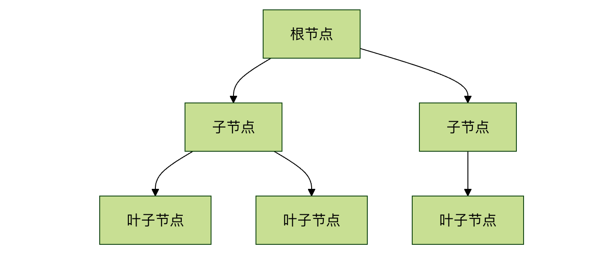
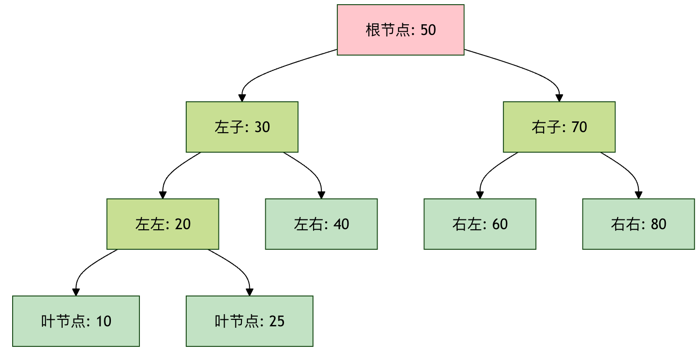
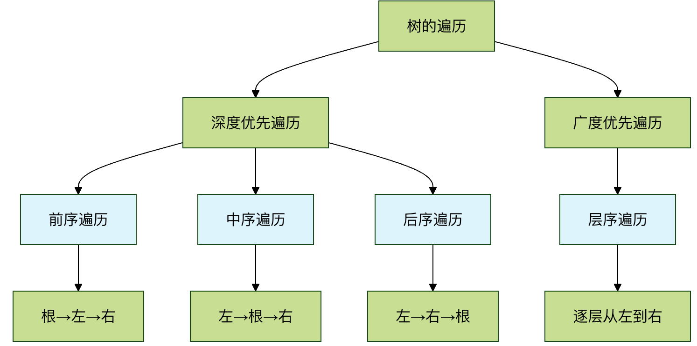

木構造
木（Tree）は一種の非線形のデータ構造であり、自然界の木の枝分かれした階層を模倣しています。配列や連結リストのように一列に並ぶ線形構造とは異なり、木の中のデータ要素（ノード）の間には明確な一対多の階層関係があります。
木構造まるで実際の木のようなものです：
- 根ノード：木の根元であり、親ノードを持たない唯一のノード
- 子ノード：あるノードから分岐したノード
- 葉ノード：子ノードを持たないノードで、木の葉のようなもの
- パス：あるノードから別のノードまでの経路
- 深さ：根ノードからそのノードまでのパスの長さ
- 高さ：そのノードから最も遠い葉ノードまでのパスの長さ
身近な例え：
- 家系図祖父母→親→子→孫
- 組織構造：CEO→ディレクター→マネージャー→社員
- ファイルシステム：ルートディレクトリ→サブディレクトリ→ファイル
- 図書分類：総記→下位分類→具体的な書籍
| 構造の種類 | 検索効率 | 挿入効率 | 削除効率 | 順序性 |
|---|---|---|---|---|
| 配列 | O(n) | O(n) | O(n) | 无 |
| 連結リスト | O(n) | O(1) | O(1) | 无 |
| ハッシュテーブル | O(1) | O(1) | O(1) | 无 |
| 二分探索木 | O(log n) | O(log n) | O(log n) | 有 |
基本用語
詳しく学ぶ前に、木の基本用語を確認しておきましょう：

- ノード（Node）：木の中の各要素です。格納するデータと、その子ノードへのリンクを含みます。
- 根ノード（Root）：木の最上位にあるノードで、木全体の起点です。1つの木には根ノードが1つだけ存在します。
- 親ノードと子ノード（Parent & Child）：ノードAが下のノードBに接続されている場合、AはBの親ノードであり、BはAの子ノードです。1つの親ノードは複数の子ノードを持つことができます。
- 兄弟ノード（Siblings）：同じ親ノードを持つノード同士は兄弟ノードになります。
- 葉ノード（Leaf）：子ノードを持たないノードで、終端ノードとも呼ばれます。
- 辺（Edge）：2つのノードを結ぶ線で、それらの関係を表します。
- パス（Path）：根ノードから特定のノードまでに経由するノードの並びです。
- 高さ（Height）：あるノードから最も遠い葉ノードまでの最長パス上の辺の数。木の高さは根ノードの高さと同じです。
- 深さ（Depth）：根ノードからあるノードまでのパス上の辺の数。根ノードの深さは0です。
- レベル（Level）：深さが同じすべてのノードは同じレベルに属します。根ノードはレベル0にあります。
木の基本性質
- 唯一のパス：木の中の任意の2つのノード間には、パスがただ1つだけ存在します。
- N個のノード、N-1本の辺：N個のノードを持つ木には、合計N-1本の辺があります。
- 閉路なし：木の中に閉路は存在しません（つまり、あるノードから出発して辺をたどっても、最終的にそのノードに戻ることはありません）。
なぜ木が必要なのか？—— 木の利点と応用
配列と連結リストがあるのに、なぜ木が必要なのかと疑問に思うかもしれません。答えは効率にあります。
- 配列：検索が速い（インデックスによる）が、挿入と削除が遅い（大量の要素を移動する必要がある）。
- 連結リスト：挿入と削除が速いが、検索が遅い（先頭から走査する必要がある）。
- 木（特に二分探索木）：データの順序を保ちながら、連結リストよりはるかに速い検索速度と、配列より効率的な挿入・削除操作を提供します。
実際の応用シーン：
- ファイルシステム：コンピュータ内のフォルダとファイルは、木構造で整理されています。
- データベースインデックス：B木やB+木は、データベースで高効率な問い合わせを実現するための中核的なデータ構造です。
- 組織図：会社や部門の階層管理。
- 決定木：人工知能や機械学習における分類モデル。
- HTML DOM：Webページの文書オブジェクトモデル（DOM）は木構造です。
二分木：木の仲間の中で最も重要な存在
二分木（Binary Tree）は、各ノードが最大2つの子ノードを持つ木です。この2つの子ノードは通常、左の子ノード和右の子ノードと呼ばれます。二分木は、多くの強力な木構造（二分探索木、ヒープ、AVL木など）の基礎となっています。
基本構造は次のとおりです：

二分木の基本用語
| 用語 | 定義 | 身近な例え |
|---|---|---|
| ノード | データとポインタを含む基本単位 | 家族の中の1人 |
| 根ノード | 木の最上位のノード | 家族の中の祖先 |
| 親ノード | 子ノードを持つノード | 親 |
| 子ノード | 親ノードから指されているノード | 子供 |
| 兄弟ノード | 同じ親ノードの子ノード | 兄弟姉妹 |
| 葉ノード | 子ノードを持たないノード | 家族の中で子供がいない人 |
| 深さ | 根からそのノードまでの辺の数 | 世代の数 |
| 高さ | そのノードから最も遠い葉ノードまでの辺の数 | その家族が続く世代数 |
二分木の種類
| 種類 | 特徴 | 時間計算量 | 応用シーン |
|---|---|---|---|
| 通常の二分木 | 各ノードが最大2つの子ノードを持つ | O(n) | 式木 |
| 全二分木 | 各ノードが0個または2個の子ノードを持つ | O(n) | ハフマン符号化 |
| 完全二分木 | 最後のレベルを除いてすべて埋まっている | O(n) | ヒープの実装 |
| 二分探索木 | 左＜根＜右 | 平均O(log n) | 検索、ソート |
| 平衡二分木 | 左右の部分木の高さの差≤1 | O(log n) | データベースインデックス |
| 赤黒木 | 色付きの平衡木 | O(log n) | Linuxカーネル |
二分探索木の操作
| 操作 | 説明 | 時間計算量 |
|---|---|---|
| 検索 | 値に基づいてノードを検索する | 平均O(log n)、最悪O(n) |
| 挿入 | 新しいノードを挿入する | 平均O(log n)、最悪O(n) |
| 削除 | 指定したノードを削除する | 平均O(log n)、最悪O(n) |
| 走査 | すべてのノードにアクセスする | O(n) |
二分木の走査
走査とは、特定の規則に従って木の中のすべてのノードにアクセスし、各ノードを1回だけ訪問することです。これは木に関連するアルゴリズムの基礎となります。主に4つの方法があります：
行きがけ順（Pre-order）：根 → 左 → 右
- 最初にルートノードを訪問し、次に左部分木を再帰的に前順走査し、最後に右部分木を再帰的に前順走査します。
- 応用：木のコピー、前置式の取得。
通りがけ順（In-order）：左 → 根 → 右
- 最初に左部分木を再帰的に中順走査し、次にルートノードを訪問し、最後に右部分木を再帰的に中順走査します。
- 応用：二分探索木（BST）において、中順走査は昇順ですべての値を出力します。
帰りがけ順（Post-order）：左 → 右 → 根
- 最初に左部分木を再帰的に後順走査し、次に右部分木を再帰的に後順走査し、最後にルートノードを訪問します。
- 応用：木の削除、ディレクトリサイズの計算。
レベル順走査（Level-order）：階層ごとに、左から右へ
- ルートノードから始めて、階層ごとにノードを訪問します。
- 応用：階層ごとにデータを処理する（組織図の出力など）。通常はキュー（Queue）を補助に使って実装します。。

例：下図の二分木の場合、走査結果は次のようになります。
1
/ \
2 3
/ \ \
4 5 6
- 前順：1, 2, 4, 5, 3, 6
- 中順：4, 2, 5, 1, 3, 6
- 後順：4, 5, 2, 6, 3, 1
- レベル順：1, 2, 3, 4, 5, 6
実践：Pythonで二分木を実装する
理論は十分です。実際にコードを書いてみましょう！単純な二分木のノードクラスを実装し、挿入と走査の操作を完成させます。
ステップ1：ノードクラスを定義する
各ノードはデータを格納し、左と右の子ノードを指す必要があります。
例
"""二分木ノードクラス"""
def __init__(self, value):
self.value = value # ノードが格納するデータ
self.left = None # 左の子ノードを指す
self.right = None # 右の子ノードを指す
def __str__(self):
"""ノード情報を出力しやすくする"""
return f"Node({self.value})"
ステップ2：サンプルの木を構築する
先ほどの例の図にあるツリーを手動で構築しましょう。
例
root = TreeNode(1)
node2 = TreeNode(2)
node3 = TreeNode(3)
node4 = TreeNode(4)
node5 = TreeNode(5)
node6 = TreeNode(6)
# 接続関係を構築（Links）
root.left = node2
root.right = node3
node2.left = node4
node2.right = node5
node3.right = node6
print(f"ルートノード: {root}")
print(f"ルートノードの左の子ノード: {root.left}")
print(f"ルートノードの右の子ノード: {root.right}")
ステップ3：走査アルゴリズムを実装する（再帰版）
再帰はツリー走査を実装する最も直感的な方法です。
例
"""前順走査：根 -> 左 -> 右"""
if node is None:
return
print(node.value, end=' ') # 1. ルートノードを訪問
preorder_traversal(node.left) # 2. 左部分木を走査
preorder_traversal(node.right) # 3. 右部分木を走査
def inorder_traversal(node):
"""中順走査：左 -> 根 -> 右"""
if node is None:
return
inorder_traversal(node.left) # 1. 左部分木を走査
print(node.value, end=' ') # 2. ルートノードを訪問
inorder_traversal(node.right) # 3. 右部分木を走査
def postorder_traversal(node):
"""後順走査：左 -> 右 -> 根"""
if node is None:
return
postorder_traversal(node.left) # 1. 左部分木を走査
postorder_traversal(node.right) # 2. 右部分木を走査
print(node.value, end=' ') # 3. ルートノードを訪問
print("\n--- 走査デモ ---")
print("前順走査の結果:", end=' ')
preorder_traversal(root) # 出力: 1 2 4 5 3 6
print("\n中順走査の結果:", end=' ')
inorder_traversal(root) # 出力: 4 2 5 1 3 6
print("\n後順走査の結果:", end=' ')
postorder_traversal(root) # 出力: 4 5 2 6 3 1
ステップ4：レベル順走査を実装する（キューを使用）
レベル順走査では、キューの「先入れ先出し」という特性を利用する必要があります。
例
def level_order_traversal(root):
"""レベル順走査：キューを使用"""
if root is None:
return
queue = deque([root]) # キューを初期化し、ルートノードを入れる
while queue:
current_node = queue.popleft() # 1. キューの左側からノードを取り出す
print(current_node.value, end=' ') # 2. そのノードを訪問
# 3. そのノードの子ノード（存在すれば）を順にキューの右側に追加
if current_node.left:
queue.append(current_node.left)
if current_node.right:
queue.append(current_node.right)
print("\nレベル順走査の結果:", end=' ')
level_order_traversal(root) # 出力: 1 2 3 4 5 6
演習とチャレンジ
基礎学習の完了おめでとうございます！ツリーを本当にマスターするには、実際に練習することが不可欠です。
演習1：木の高さを計算する
関数を書いてくださいtree_height(node)、木のルートノードを受け取り、その木の高さを返します（空の木の高さは -1 または 0 とします。慣例に合わせてよいです。この例ではエッジの数と定義します）。
ヒント：ツリーの高さ = 1 + max(左部分木の高さ， 右部分木の高さ)。これは典型的な再帰問題です。
演習2：二分木で値を検索する
関数を書いてくださいsearch_in_tree(node, target_value)、与えられた二分木の中に、値がtarget_valueと等しいノードが存在するか検索します。見つかった場合は、True、それ以外の場合はFalse。
ヒント：任意の走査方法を使用して、各ノードを訪問するときにその値を比較できます。
チャレンジ：二分探索木（BST）
これは二分木の古典的な変種です。二分探索木では、任意のノードについて：
- 其左部分木内のすべてのノードの値は<そのノードの値。
- 其右部分木内のすべてのノードの値は>そのノードの値。
あなたのチャレンジは：
- 実装する
insert_into_bst(root, value)関数：二分探索木の正しい位置に値を挿入します。 - 実装する
search_in_bst(root, value)関数：BSTの特性を利用して効率的に検索します（平均時間計算量 O(log N)）。
クリックしてノートを共有
<p style="font-size:14px;">ノートは本記事の内容を拡張したものである必要があります！</p><br> <p style="font-size:12px;"><a href="../tougao.html" target="_blank">記事投稿は、ここをクリックしてください</a></p> <p style="font-size:14px;"><a href="../w3cnote/runoob-user-test-intro.html" target="_blank">登録招待コードの取得方法</a></p> <h3 class="text-muted"><i class="fa fa-info-circle" aria-hidden="true"></i> ノートを共有する前に<a href=";.html" class="runoob-pop">ログイン</a>！</h3> <p><a href="../w3cnote/runoob-user-test-intro.html" target="_blank">登録招待コードの取得方法</a></p>